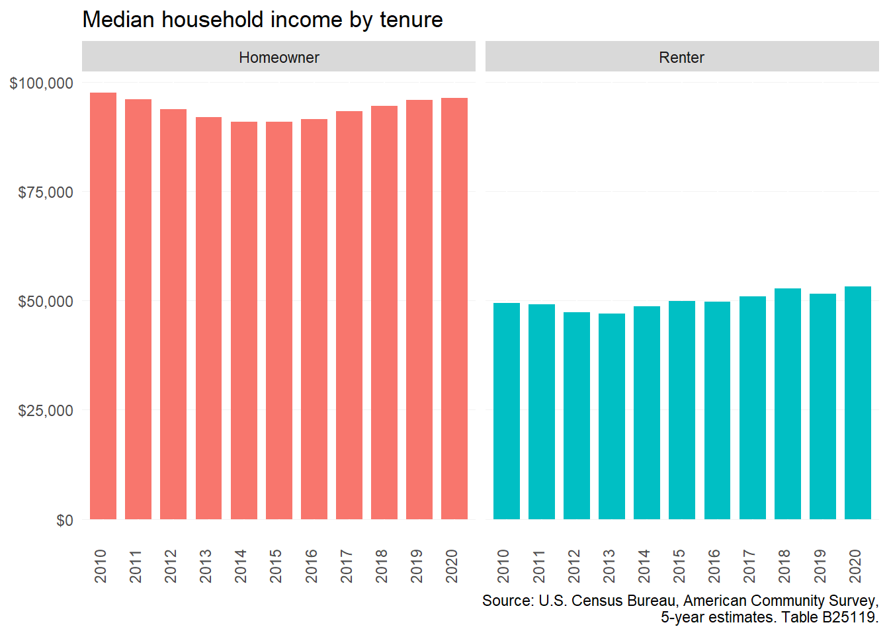
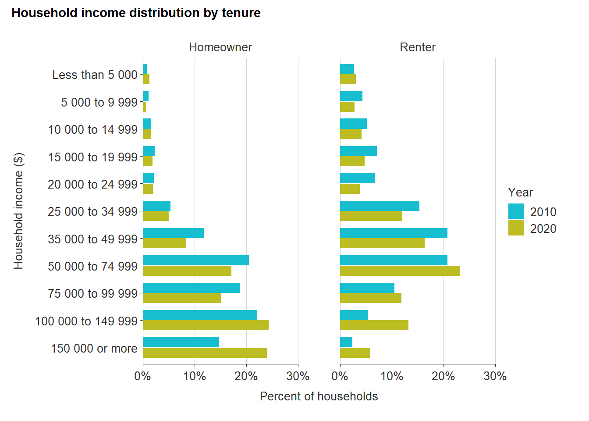
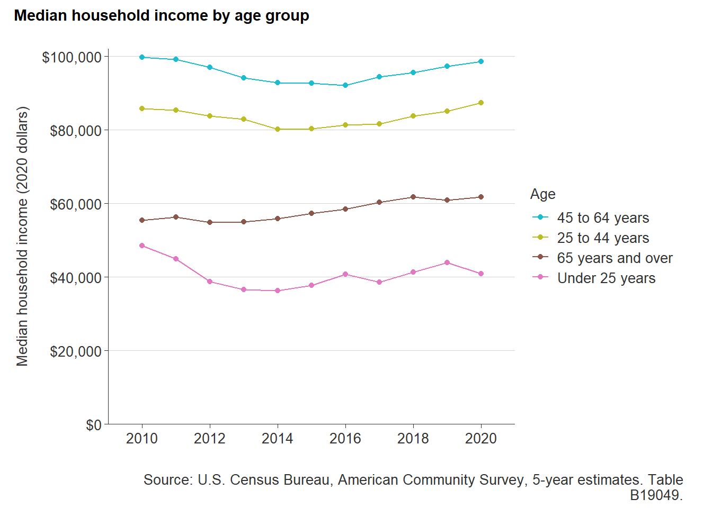
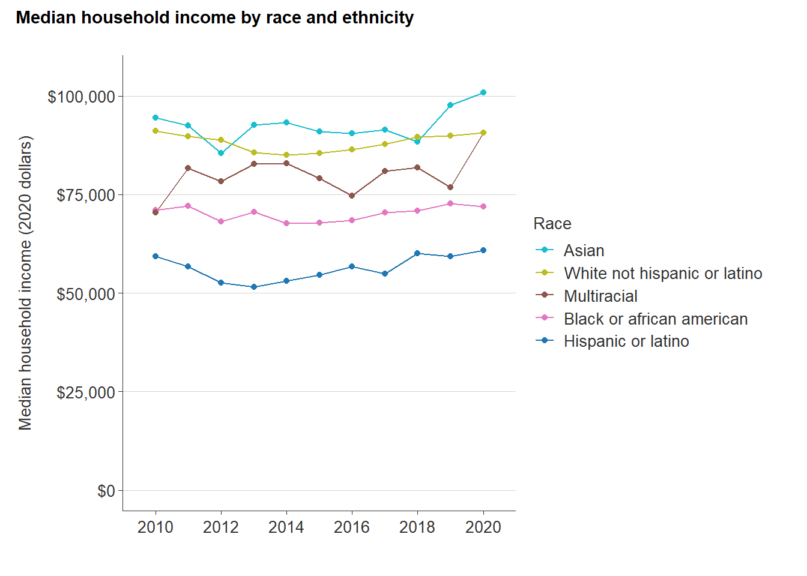

8 Household income
This section provides an analysis of household incomes in Chesterfield County disaggregated by tenure, age, and race/ethnicity. The major data source for this information is the American Community Survey.
8.1 Background
In 2020, housing expenses increased amid the pandemic to account for nearly 35 percent of the average American household’s spending—the largest share of average annual expenditures regardless of household type. While housing prices have been on the rise, household incomes across the country have not kept pace. This has largely resulted in a higher share of household incomes being spent on basic living expenses.
However, like the rest of the country, households in Chesterfield County have a wide range of incomes and expenditures. The following sections show how household incomes vary by tenure, age, race and ethnicity. Income disparities exist across the county, and have major implications on the need for housing diversity.
8.2 Tenure
While a majority of Chesterfield residents are homeowners, the number of renters has grown over the past decade. The increase in households who rent can be attributed to the growing cost of homeownership in the county, as well as changing preferences among individuals and families.
As of 2020, the median household income for renters is nearly half (55 percent) that of the typical homeowner’s household income: $53,147 compared to $96,296. When adjusted for inflation, the median renter income has risen slightly over the past decade (by just under $4,000). This is likely in part due to some middle-income households delaying homeownership because of limited affordable inventory and, for some young working adults, burdensome student loan debt.
At the same time, average homeowner incomes have actually declined slightly (by just over $1,000). One potential explanation for the limited income growth among homeowners is the ongoing transition from full employment to fixed income for baby boomers entering retirement.
Because real average incomes for both homeowners and renters in Chesterfield County have remained steady for a decade, a wide gap of more than $43,000 remains.

The following graph shows the distribution of households incomes by tenure, for both 2010 and 2020. The Census Bureau does not adjust these income ranges for inflation, so 2010 incomes are in 2010 dollars. Both homeowners and renters experienced upward shifts in their nominal incomes, with significant growth in households earning $100,000 or more annually. The share of renter households earning between $50,000 and $99,999 also increased.

8.3 Age
While younger households generally have less income because they are typically getting started in their careers, senior households can face similar challenges as they approach retirement age and transition to fixed incomes. This is evident in Chesterfield County, where households both under 25 and 65 and older have substantially lower average incomes.
The 45 to 64 year age group had a high median household income nearing $100,000 in 2020. This age group represents a significant number of Generation X’ers and baby boomers in their prime working years who have chosen to live in the county. Millennial households in the county—those 25 to 44 years old—also have high incomes ($87,328).
Chesterfield seniors in 2020 had a median household income of $61,777. Although this was the only age group to see a moderate increase (11 percent) in median household income, senior incomes are still significantly lower than their other adult counterparts. This translates to less income to compete for housing in the Chesterfield market.
At the opposite end of the spectrum, households under 25 have seen decreasing incomes—going from $48,591 in 2010 to $40,881 in 2020, a 16 percent decrease. Lower incomes among Generation Z may have major implications on the need for more rental and starter home options amid rising costs.

8.4 Race and ethnicity
Like the rest of Virginia and the nation, average household incomes across Chesterfield vary significantly by race and ethnicity. These differences are the result of many historical and structural disparities affecting economic opportunities for persons of color.
Over the last decade, Asian and white non-Hispanic households in Chesterfield have maintained the highest median incomes. As of 2020, the estimated median income for the county’s Asian households topped $100,000. White non-Hispanic households also had high incomes, averaging $90,712.
Multiracial households saw the largest real increase in incomes, growing by over 28 percent from 2010 to 2020. However, this increase occurred almost entirely from 2019 to 2020, which is likely reflective of additional individuals and households choosing to identify with more than one race or ethnicity than they would have in previous years.
The significant rise in income for multiracial households is very likely in part because of the changing ways Americans are choosing to identify their race and ethnicity.
The lowest average incomes in the county are found among Hispanic and Black households; both groups have also not seen significant changes in real incomes since 2010. Black households had a median income of $71,962 in 2020, while Hispanic households had a median income of $60,875. That amount is roughly equal to the annual gross pay for two full-time workers earning $15 per hour.

8.5 Takeaways
- Average household incomes in Chesterfield County are relatively higher than the region as a whole, but many household types in the county still have lower incomes that make housing affordability challenging.
- Renters earn just above half that of homeowners in the county.
- Younger workers are more likely to live on their own and/or have lower wage jobs; householders under 25 have the lowest incomes of all age groups in the county.
- Income disparities by race and ethnicity have persisted in the county for the past decade.